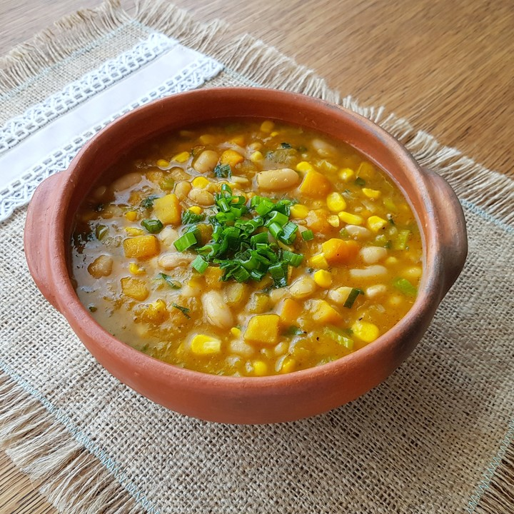
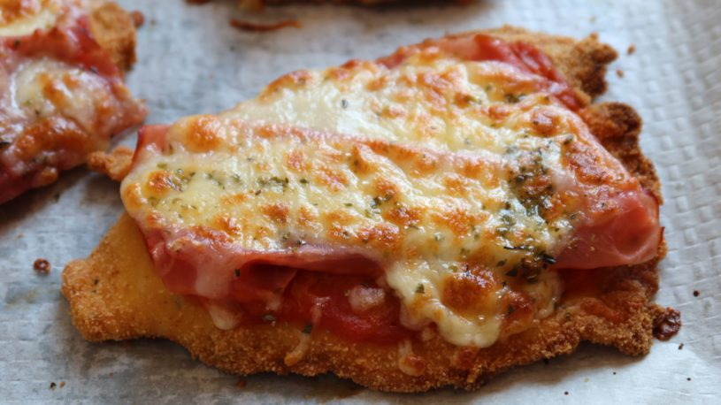
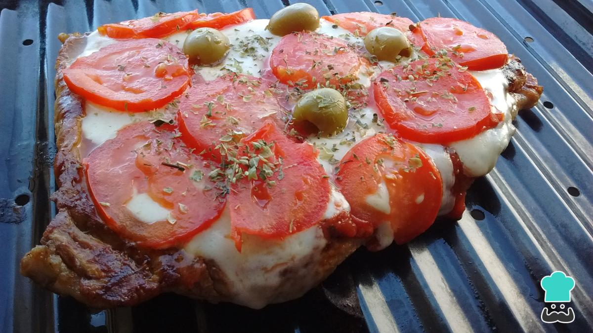
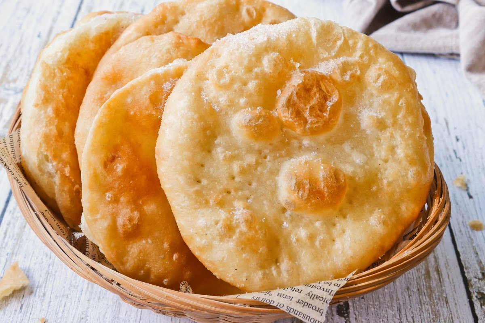

RECETA I - Locro

Pasos
- Poné a remojar la noche anterior maíz blanco pisado y porotos. Al día siguiente, hervilos juntos en agua abundante durante 1 hora hasta que empiecen a abrirse.
- Incorporá al fondo cuerito de cerdo, chorizos colorados en rodajas, osobuco y zapallo en cubos, y cocinás a fuego medio revolviendo cada tanto.
- Preparás el sofrito aparte: cebolla de verdeo, pimentón ahumado y ají molido bien rehogados en grasa o aceite, y lo volcás sobre el locro.
- Dejás cocinar a fuego bajo otros 30 minutos revolviendo hasta que espese bien, ajustás la sal y servís con pan casero.
RECETA II - Milanesa Napolitana

Pasos
- Pasá la milanesa por huevo batido con sal y después por pan rallado, presionando bien para que quede adherido.
- Freí en aceite bien caliente hasta que quede dorada de ambos lados y reservá sobre papel absorbente.
- Cubrí cada milanesa con salsa de tomate, jamón cocido y mozzarella en ese orden.
- Llevá al horno a 200°C durante 10 minutos o hasta que el queso esté completamente derretido y dorado.
RECETA III - Matambre a la Pizza

Pasos
- Cocinás el matambre en agua con sal, laurel y pimienta en grano a fuego bajo durante 40 minutos hasta que esté tierno, luego lo escurrís y secás bien.
- Llevás el matambre a una asadera y lo sellás en el horno bien fuerte a 220°C durante 10 minutos para que tome color.
- Cubrís con salsa de tomate bien condimentada con orégano y ajo, y encima distribuís mozzarella generosa y rodajas de tomate.
- Volvés al horno hasta que el queso burbujee y se dore, lo retirás, agregás más orégano fresco y servís cortado en porciones.
RECETA IV - Tortas Fritas

Pasos
- Mezclá 2 tazas de harina, 1 cucharadita de sal, 1 cucharada de grasa de pella y agua tibia de a poco hasta formar un bollo suave que no se pegue.
- Dejás reposar el bollo tapado con un repasador 15 minutos para que la masa se relaje y sea más fácil de estirar.
- Estirás la masa finita, cortás círculos del tamaño de una taza de café y les hacés un agujerito en el centro con el dedo.
- Freís en grasa o aceite bien caliente hasta que inflen y se doren de ambos lados, las retirás y servís con azúcar, dulce de leche o mate.
RECETA V - Panqueques con DDL

Pasos
- Mezclá 1 taza de harina, 1 taza de leche, 2 huevos y una pizca de sal hasta obtener una mezcla lisa sin grumos.
- Calentá una sartén antiadherente con un toque de manteca y volcá un cucharón de mezcla girando para cubrir el fondo.
- Cocinás 1 minuto por cada lado hasta que los bordes se desprendan solos y el panqueque quede levemente dorado.
- Untá cada panqueque con dulce de leche, enrollalos o doblalos en triángulos y serví con lo que mas te guste.